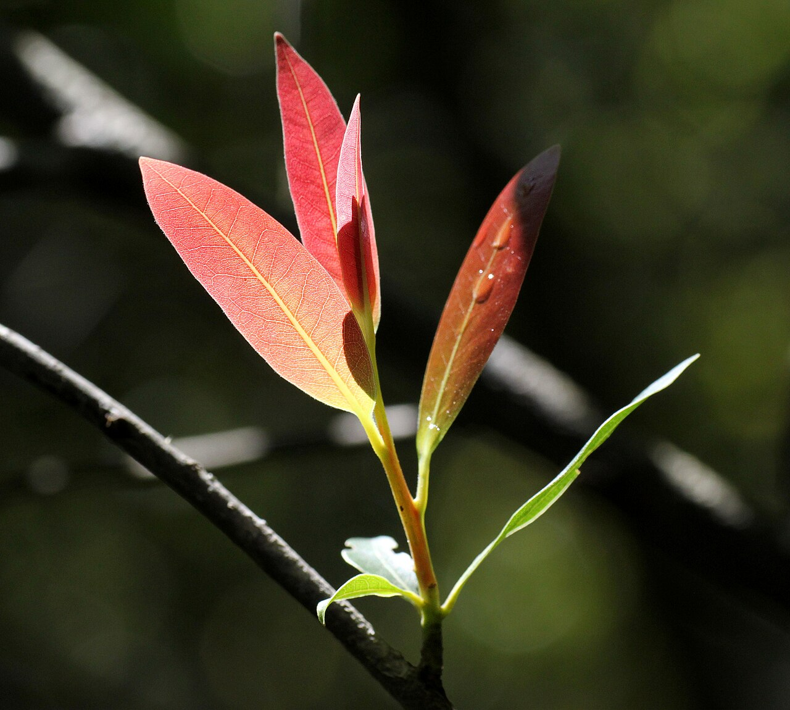

Berkeley and East Bay plant learning
A plant-learning companion for the UC Berkeley area.
Forage Berkeley helps students, visitors, and neighbors near campus practice local plant identification with a photo quiz and searchable browse guide built from 73 Berkeley and East Bay species.
Get local plant-learning updates
Leave an email for Forage Berkeley progress notes and new Berkeley plant lessons. Updates only, never safety advice.
Join the update listIndependent project. Not affiliated with, endorsed by, or sponsored by the University of California, Berkeley.



Why this exists
Berkeley has campus paths, creek edges, street trees, gardens, and East Bay trails close together. Forage Berkeley turns that local mix into practice material, so a learner can recognize names, leaves, seasons, warnings, and common uses before treating any plant as familiar.
The app is meant for learning and memory, not for making eating decisions in the field.
What to use it for
- Start with the quiz to learn plants by photo, not by a single list.
- Use Browse to search the local deck by name and edibility category.
- Notice do-not-eat and eat-with-care plants as recognition cards, not foraging suggestions.
Safety boundary
Forage Berkeley is a learning aid, not a safety authority. Never eat anything based on this app alone. Confirm plants with a regional field guide, a qualified human, and current site conditions before any real-world use.